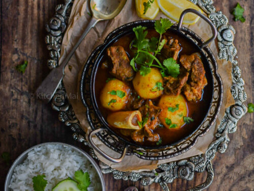

Ingredients
- Mutton (goat or lamb): 500 grams, cut into pieces
- Onions: 3 large, finely chopped
- Tomatoes: 2 medium, pureed or finely chopped
- Garlic: 6-8 cloves, minced
- Ginger: 2-inch piece, minced
- Green chilies: 2, slit (optional)
- Yogurt: 1/2 cup
- Water: 2 cups (adjust as needed)
- Fresh cilantro: for garnish, chopped
- Oil: 4 tablespoons
- Turmeric powder: 1/2 teaspoon
- Red chili powder: 1 teaspoon
- Coriander powder: 2 teaspoons
- Cumin powder: 1 teaspoon
- Garam masala: 1 teaspoon
- Salt: to taste
- Bay leaf: 1
- Cinnamon stick: 1-inch piece
- Cloves: 4
- Cardamom pods: 3
- Cumin seeds: 1 teaspoon
Process
- step1: Clean and cut the mutton into pieces.
- step2: Finely chop the onions and puree or finely chop the tomatoes.
- step3: Mince the garlic and ginger.
- step4:In a bowl, mix the mutton pieces with yogurt, turmeric powder, red chili powder, and salt. Set aside for at least 30 minutes to marinate.
- step5: Heat oil in a large pot or pressure cooker over medium heat.
- step6:Add the bay leaf, cinnamon stick, cloves, cardamom pods, and cumin seeds. Let them splutter for a few seconds.
- step7: Add the finely chopped onions and sauté until they turn golden brown. This step is crucial for the flavor, so be patient and allow the onions to caramelize properly.
- step8: Add the minced garlic, ginger, and slit green chilies (if using). Sauté for another 2-3 minutes until fragrant.
- step9: Add the pureed or finely chopped tomatoes. Cook until the tomatoes break down and the oil starts to separate from the mixture, about 10 minutes.
- step10: Add the coriander powder and cumin powder. Sauté for a minute to let the spices bloom.
- step11: Add the marinated mutton pieces. Cook for 5-7 minutes, stirring occasionally, until the mutton is browned on all sides.
- step12:Add 2 cups of water, mix well, and bring the mixture to a boil.
- step13: If using a pressure cooker: Cover the pressure cooker with the lid, cook on high heat until the first whistle, then reduce the heat to low and cook for another 20-25 minutes.
- step14: Allow the pressure to release naturally.
- step15: If using a pot: Cover with a lid and simmer on low heat for about 1.5 to 2 hours, or until the mutton is tender. Stir occasionally and add more water if needed.
- step16:Once the mutton is cooked and tender, check the consistency of the gravy.
- step17: If it is too thick, add a bit more water and simmer for a few more minutes. If it is too thin, cook uncovered for a few minutes until it thickens to your liking.
- step18: Add garam masala and mix well. Simmer for another 2-3 minutes.
- step19:Garnish with fresh cilantro.